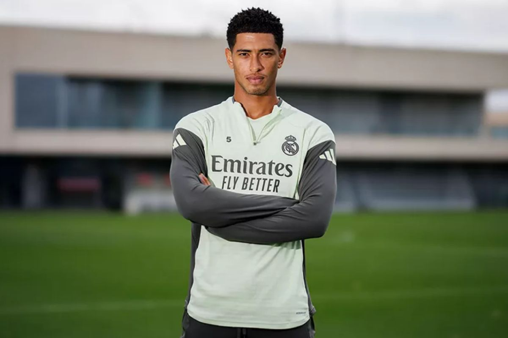
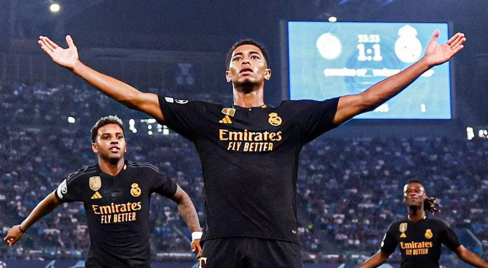

Profil
Jude Victor William Bellingham lahir pada 29 Juni 2003 di Stourbridge, Inggris. Ia dikenal sebagai salah satu gelandang muda terbaik di dunia.
Karier
Bellingham memulai kariernya di Birmingham City sebelum bergabung dengan Borussia Dortmund pada 2020. Kini ia bermain untuk Real Madrid dan menjadi kunci di lini tengah tim.
Prestasi
- 🏆 La Liga Player of the Month - 2023
- ⚽ Golden Boy Award - 2023
- 🌍 England National Team Starter